# Установка рабочей директории
setwd("C:/TEXTBOOK/")
# Загрузка библиотек
library(tidyverse)
# Загрузка данных
data <- read_csv("shrimp_catch.csv")2 Анализ и визуализация данных улова
2.1 Введение (в R)
2.2 Загрузка данных и первичный осмотр
ссылка на файл: shrimp_catch.csv
Команда glimpse знакомит со структурой данных:
# Просмотр структуры и первых строк загруженных данных
glimpse(data)Rows: 230
Columns: 5
$ id <int> 1, 2, 3, 4, 5, 6, 7, 8, 9, 10, 11, 12, 13, 14, 15, 16, 17, 18, ~
$ age <int> 2, 4, 4, 4, 1, 4, 2, 2, 4, 3, 4, 3, 2, 1, 2, 1, 2, 2, 2, 2, 3, ~
$ length <dbl> 20.45450, 25.88928, 29.42257, 30.68292, 12.46059, 28.52152, 17.~
$ weight <dbl> 1.28221748, 1.97476899, 2.65412595, 3.44746476, 0.13404801, 2.3~
$ sex <chr> "M", "F", "F", "F", "M", "F", "M", "M", "F", "F", "F", "F", "M"~
> Можно использовать команду str — показывает внутреннюю структуру объекта , включая количество строк, столбцов, названия переменных, их типы (chr, num, int и др.), а также несколько первых значений.
str(data)'data.frame': 230 obs. of 5 variables:
$ id : int 1 2 3 4 5 6 7 8 9 10 ...
$ age : int 2 4 4 4 1 4 2 2 4 3 ...
$ length: num 20.5 25.9 29.4 30.7 12.5 ...
$ weight: num 1.282 1.975 2.654 3.447 0.134 ...
$ sex : chr "M" "F" "F" "F" ...
>2.3 Описательная статистика и визуализация
Команда summary выводит описательную статистику для каждой числовой переменной: минимум, 1-й квартиль, медиана, среднее, 3-й квартиль, максимум; для категориальных переменных — частоты.
# Общая статистика
summary(data) id age length weight
Min. : 1.00 Min. :1.000 Min. : 7.65 Min. :-0.3334
1st Qu.: 58.25 1st Qu.:2.000 1st Qu.:17.62 1st Qu.: 0.6320
Median :115.50 Median :3.000 Median :22.49 Median : 1.3660
Mean :115.50 Mean :2.509 Mean :21.68 Mean : 1.4933
3rd Qu.:172.75 3rd Qu.:3.000 3rd Qu.:26.03 3rd Qu.: 2.1148
Max. :230.00 Max. :4.000 Max. :36.02 Max. : 5.1316
sex
Length:230
Class :character
Mode :character Простейшими командами можно вычислить, например, соотоношение полов или корреляцию длина-вес.
# Соотношение полов
prop.table(table(data$sex)) %>% round(2) F M
0.35 0.65 # Корреляция длина-вес с p-value
cor_test <- cor.test(data$length, data$weight,
method = "pearson",
exact = FALSE,
na.action = na.omit)
cor_coef <- round(cor_test$estimate, 2)
p_value <- scales::pvalue(cor_test$p.value, accuracy = .001)
cat("Корреляция Пирсона: r =", cor_coef, ", p =", p_value, "\n")Корреляция Пирсона: r = 0.95 , p = <0.001 # Распределение возраста
table(data$age)1 2 3 4
43 68 77 40 # Средние значения длины и веса по группам
data %>%
group_by(age) %>%
summarise(
mean_length = mean(length),
sd_length = sd(length),
mean_weight = mean(weight),
sd_weight = sd(weight))# A tibble: 4 x 5
age mean_length sd_length mean_weight sd_weight
<dbl> <dbl> <dbl> <dbl> <dbl>
1 1 12.7 1.37 0.249 0.234
2 2 19.2 1.88 0.919 0.341
3 3 24.8 1.72 1.88 0.424
4 4 29.1 2.28 2.96 0.804
> 2.3.1 Построение гистограммы для переменной ‘length’ (длина креветок)
Для первого визуального знакомства команда hist строит гистограмму — простой график, который показывает, как распределены значения числовой переменной. В данном случае отображается распределение длин креветок из набора данных.
hist(data$length,
main = "Гистограмма длины креветок", # Заголовок графика
xlab = "Длина (см)", # Подпись оси X
ylab = "Частота", # Подпись оси Y
col = "lightblue", # Цвет столбцов
border = "black", # Цвет границ столбцов
breaks = 15) # Количество интервалов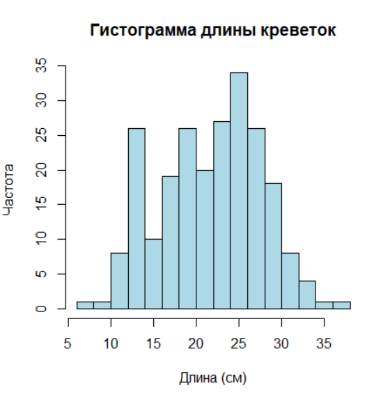
2.3.2 Визуализация в ggridges
Для элегантных и компактных графиков подходит библиотека ggridges. Посторим распределение длины креветки в зависимости от пола и возраста.
library(ggplot2)
library(ggridges)
ggplot(data, aes(x = length,
y = sex,
group = sex,
fill = sex)) +
geom_density_ridges(scale = 2, alpha = 0.7) +
scale_y_discrete(expand = c(0, 0)) +
scale_x_continuous(expand = c(0, 0)) +
labs(
title = "Распределение длины карапакса по полу",
x = "Длина карапакса (мм)",
y = "Пол"
) +
theme(
panel.border = element_blank(), # Убирает рамку вокруг графика
axis.line = element_line(color = "black") # Сохраняет осевые линии (опционально)
)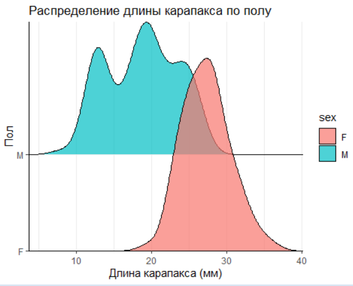
ggridges2.4 Выявление аутлайеров (выбросов)
Аутлаеры (выбросы) — наблюдения, значительно отклоняющиеся от общего распределения данных. Их идентификация критически важна, так как они могут искажать результаты анализа. Один из надёжных методов обнаружения выбросов — метод межквартильного размаха (IQR).
2.4.1 Теория метода
Расчёт квартилей:
Q1 (25-й перцентиль): значение, ниже которого находится 25% данных.
Q3 (75-й перцентиль): значение, ниже которого находится 75% данных.
IQR = Q3 - Q1: мера разброса средней половины данных.
Границы аутлаеров:
Нижняя граница: Q1−1.5×IQRQ1−1.5×IQR
Верхняя граница: Q3+1.5×IQRQ3+1.5×IQR
Наблюдения за этими пределами считаются выбросами.
2.4.2 Преимущества метода
Устойчивость к асимметрии распределения.
Не требует предположения о нормальности данных.
# Метод межквартильного размаха
outliers <- data %>%
mutate(
length_z = scale(length),
weight_z = scale(weight)
) %>%
filter(abs(length_z) > 3 | abs(weight_z) > 3)
# Визуализация
ggplot(data, aes(x = length, y = weight)) +
geom_point(aes(color = "Обычные"), alpha = 0.5) +
geom_point(data = outliers, aes(color = "Аутлаеры"), size = 3) +
scale_color_manual(values = c("Обычные" = "grey50", "Аутлаеры" = "red")) +
labs(title = "Выявление аномальных наблюдений", color = "Тип")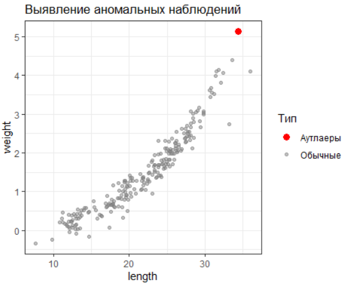
2.5 Определение возрастной структуры: статистические методы анализа размерных данных
Возрастная структура популяции — часто важна для расчёта промысловой смертности, оценки репродуктивного потенциала и прогнозирования динамики запасов. Поскольку прямое измерение возраста часто невозможно (например, у беспозвоночных или рыб без четких возрастных меток), используются статистические методы, выделяющие группы в смешанных распределениях размеров.
Основные подходы:
Метод k-средних (k-means) — алгоритм кластеризации, группирующий особи в заданное число кластеров (возрастных групп) на основе их размеров.
Метод Бхаттачарии — статистический подход для разделения смешанных нормальных распределений, часто применяемый для идентификации мод в гистограммах.
EM-алгоритм — оценка параметров смеси распределений, подходящая для данных с перекрывающимися возрастными группами.
Гауссовы смеси (GMM) — расширение метода Бхаттачарии для многомерного анализа.
Ядерное сглаживание — непараметрический метод визуализации плотности, помогающий выявить скрытые моды.
Рассмотрим метод k-средних (k-means) и метод Бхаттачарии, предварительно построив гистограмму.
# Загрузка библиотек
library(tidyverse)
library(mixtools)
# Гистограмма длины с наложением плотности
ggplot(data, aes(x = length)) +
geom_histogram(aes(y = after_stat(density)), fill = "steelblue", bins = 20, alpha = 0.7) +
geom_density(color = "#FC4E07", linewidth = 1) +
labs(title = "Распределение длины карапакса",
subtitle = "Пики могут соответствовать возрастным группам",
x = "Длина (мм)")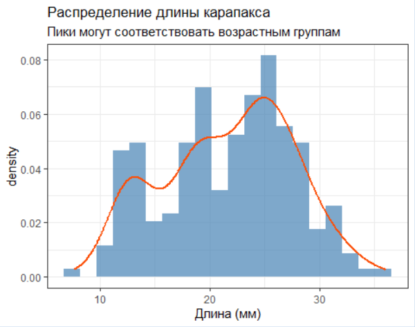
# Кластеризация по длине (K-means как пример)
set.seed(123)
clusters <- kmeans(data$length, centers = 4) # Предполагаем 4 возрастные группы
data$cluster <- factor(clusters$cluster)
# Визуализация кластеров
ggplot(data, aes(x = length, fill = cluster)) +
geom_histogram(bins = 25, alpha = 0.7) +
labs(title = "Кластеризация по длине)",
x = "Длина (мм)")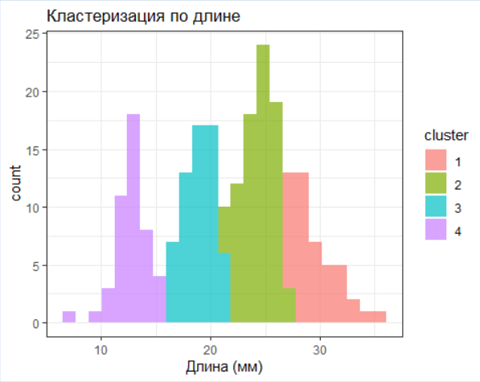
# Установка рабочей директории
setwd("C:/TEXTBOOK/")
# Загрузка библиотек
library(tidyverse)
library(mixtools)
# Загрузка данных
data <- read.csv("shrimp_catch.csv")
# 1. Построение и отображение гистограммы
hist(data$length, breaks = 20, main = "Гистограмма распределения длин карапаксов",
xlab = "Длина карапакса (мм)", ylab = "Частота")
# 2. Инициализация параметров (предположим 4 возрастные группы)
init_params <- list(
lambda = rep(1/4, 4),
mu = c(13, 19, 25, 32),
sigma = c(1.5, 1.75, 1.75, 2.5)
)
# 3. Разделение смеси распределений методом EM
fit <- normalmixEM(data$length, k = 4, maxit = 1000, epsilon = 1e-3,
lambda = init_params$lambda,
mu = init_params$mu,
sigma = init_params$sigma)
# 4. Визуализация результатов с ggplot2
# Генерация сетки для построения кривых
x_grid <- seq(min(data$length), max(data$length), length.out = 500)
# Функция смеси
mixture_density <- function(x) {
fit$lambda[1] * dnorm(x, fit$mu[1], fit$sigma[1]) +
fit$lambda[2] * dnorm(x, fit$mu[2], fit$sigma[2]) +
fit$lambda[3] * dnorm(x, fit$mu[3], fit$sigma[3]) +
fit$lambda[4] * dnorm(x, fit$mu[4], fit$sigma[4])
}
# График
ggplot(data, aes(x = length)) +
# Гистограмма
geom_histogram(aes(y = after_stat(density)), bins = 20, fill = "white", color = "black", alpha = 0.7) +
# Исходное распределение (гладкая линия)
geom_density(color = "red", lwd = 1.2) +
# Смесь распределений
stat_function(fun = mixture_density, color = "black", lwd = 1.5) +
# Компоненты смеси
stat_function(fun = function(x) fit$lambda[1] * dnorm(x, fit$mu[1], fit$sigma[1]), color = "blue", lwd = 1) +
stat_function(fun = function(x) fit$lambda[2] * dnorm(x, fit$mu[2], fit$sigma[2]), color = "green", lwd = 1) +
stat_function(fun = function(x) fit$lambda[3] * dnorm(x, fit$mu[3], fit$sigma[3]), color = "orange", lwd = 1) +
stat_function(fun = function(x) fit$lambda[4] * dnorm(x, fit$mu[4], fit$sigma[4]), color = "purple", lwd = 1) +
# Настройка темы и легенды
theme_minimal() +
labs(
x = "Длина карапакса (мм)",
y = "Плотность",
title = "Разделение возрастных групп методом EM"
)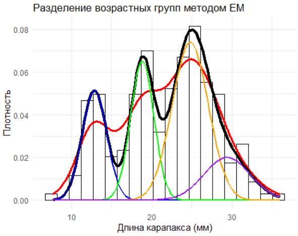
2.6 Уравнение Берталанфи
Уравнение Берталанфи — фундаментальная модель в рыбохозяйственной науке, описывающая асимптотический рост организмов. Оно имеет вид: \[ L(t) = L_{\infty} \cdot \left(1 - e^{-k \cdot (t - t_0)}\right) \] где L∞— теоретическая максимальная длина особи, k— коэффициент скорости роста, t0— гипотетический возраст при нулевой длине.
В приведённом коде модель применяется для анализа роста северной креветки :
Подготовка данных: Удаление аутлаеров (например, строк 10 и 50) повышает точность оценки параметров.
Инициализация параметров:
L∞ задаётся как максимальная наблюдаемая длина в данных.
k и t0 подбираются итеративно методом нелинейных наименьших квадратов (
nls).
Визуализация: График сопоставляет эмпирические данные (точки) с предсказаниями модели (красная линия), демонстрируя, как рост замедляется с приближением к L∞.
Интерпретация параметров:
Высокое значение k (>0.3) указывает на быстрый рост молоди.
t0<0 может отражать ранний метаморфоз личинок.
# Загрузка библиотек
library(ggplot2)
library(dplyr)
library(nlme)
# Загрузка данных
data <- read.csv("shrimp_catch.csv")
# Преобразование возраста в числовой формат
data$age_num <- as.numeric(data$age)
# Удаление аутлайеров (если необходимо)
data_clean <- data %>%
filter(!id %in% c(10, 50)) # Пример удаления строк с аномалиями
# Начальные параметры на основе данных
L_inf_start <- max(data_clean$length, na.rm = TRUE) # Максимальная длина
k_start <- 0.3 # Средняя скорость роста
t0_start <- -0.5 # Гипотетический возраст
# Подгонка модели с увеличенным числом итераций
model <- nls(
length ~ L_inf * (1 - exp(-k * (age_num - t0))),
data = data_clean,
start = list(L_inf = L_inf_start, k = k_start, t0 = t0_start),
control = nls.control(maxiter = 200, warnOnly = TRUE) # Увеличиваем лимит итераций
)
# Вывод результатов
summary(model)
# Создание последовательности возрастов для предсказания
age_seq <- seq(min(data_clean$age_num), max(data_clean$age_num), by = 0.1)
# Предсказание значений длины
length_pred <- predict(model, newdata = data.frame(age_num = age_seq))
# Построение графика
ggplot(data_clean, aes(x = age_num, y = length)) +
geom_point(aes(color = age), alpha = 0.7) +
geom_line(data = data.frame(age_num = age_seq, length = length_pred),
aes(x = age_num, y = length), color = "red", linewidth = 1.2) +
labs(
title = "Рост креветок по уравнению Берталанфи",
x = "Возраст (годы)",
y = "Длина карапакса (мм)",
color = "Возрастная группа"
) +
theme_minimal()
# Сохранение графика
ggsave("bertalanffy_model.png", width = 8, height = 6)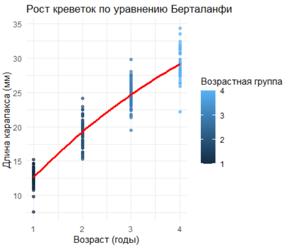
2.7 Огива, логистическая кривая и 50%-ное созревание
Логистическая кривая — ключевой инструмент для моделирования бинарных процессов, таких как созревание или смена пола у организмов. В случае протоандрических креветок (Pandalus borealis), которые меняют пол с возрастом, зависимость вероятности быть самкой от длины карапакса можно описать логистической функцией:
\[ P(F) = \frac{1}{1 + e^{-(\beta_0 + \beta_1 \cdot длина)}} \]
где P(F) — вероятность принадлежности к женскому полу, β0 — интерсепт, β1 — коэффициент влияния длины.
Точка перегиба логистической кривой соответствует длине, при которой вероятность быть самкой равна 50%: \[ L_{50} = -\frac{\beta_0}{\beta_1} \]
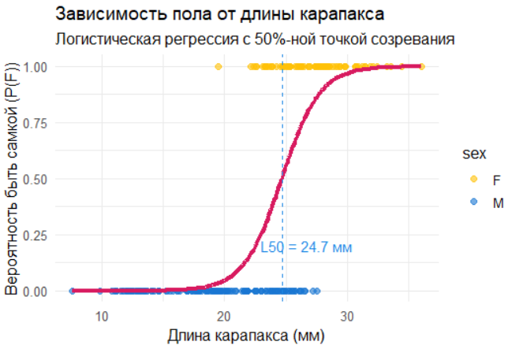
Огива (кумулятивная кривая) показывает накопление вероятности с увеличением длины. Для анализа созревания её можно построить через интеграл логистической функции. Визуально она демонстрирует, как доля самок возрастает с размером.
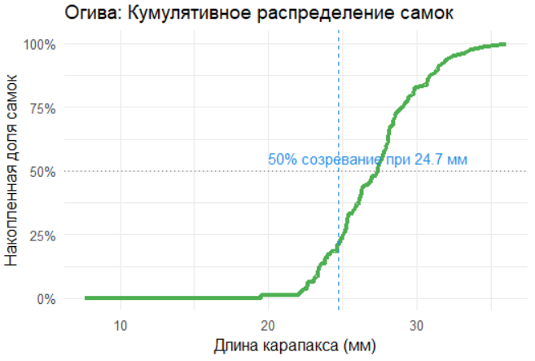
2.7.1 Оценка модели
ROC-кривая и AUC:
Площадь под ROC-кривой (AUC) >0.7 указывает на хорошую предсказательную способность модели.
Значение AUC = 0.94(пример из кода) подтверждает сильную связь длины и пола.
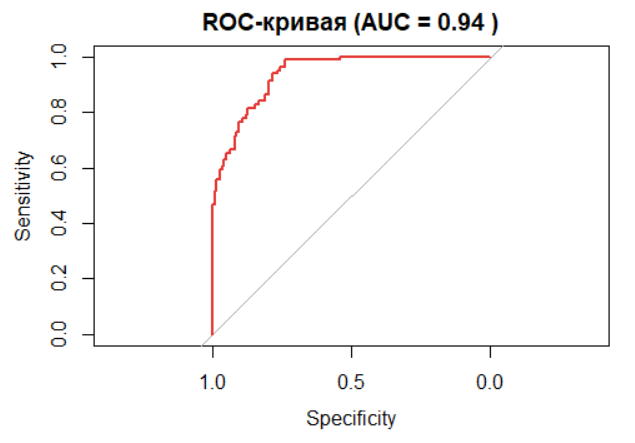
Интерпретация коэффициентов:
Положительный β1 означает: с ростом длины вероятность быть самкой увеличивается.
Например, β1=0.25 → увеличение длины на 1 мм повышает шансы в e0.25≈1.28 раза.
2.7.2 Биологический контекст
Протоандрический гермафродитизм: У креветок смена пола с самцов на самок происходит при достижении критического размера (~25-28 мм).
L50 как индикатор: Снижение L50 в популяции может сигнализировать о стрессовых условиях (перелов, изменение среды), ускоряющих созревание.
# Установка рабочей директории
setwd("C:/TEXTBOOK/")
# Загрузка библиотек
library(tidyverse)
library(pROC)
library(ggplot2)
# Загрузка данных
data <- read_csv("shrimp_catch.csv")
# 1. Предобработка данных -----------------------------------------------------
# Удаление аутлаеров методом IQR
Q1 <- quantile(data$length, 0.25)
Q3 <- quantile(data$length, 0.75)
IQR <- Q3 - Q1
data_clean <- data %>%
filter(length >= Q1 - 1.5*IQR & length <= Q3 + 1.5*IQR)
# 2. Логистическая регрессия --------------------------------------------------
# Преобразование пола в бинарную переменную
data_clean$sex_binary <- ifelse(data_clean$sex == "F", 1, 0)
# Подгонка модели
model_logit <- glm(sex_binary ~ length,
data = data_clean,
family = binomial(link = "logit"))
# Расчет коэффициентов
beta0 <- coef(model_logit)[1]
beta1 <- coef(model_logit)[2]
# Вычисление L50 (длина 50% созревания)
L50 <- round(-beta0/beta1, 1)
# 3. Визуализация ------------------------------------------------------------
# Логистическая кривая
ggplot(data_clean, aes(x = length, y = sex_binary)) +
geom_point(aes(color = sex), alpha = 0.6, size = 2) +
geom_line(aes(y = predict(model_logit, type = "response")),
color = "#D81B60", linewidth = 1.5) +
geom_vline(xintercept = L50, linetype = "dashed", color = "#1E88E5") +
annotate("text", x = L50 + 2, y = 0.2,
label = paste("L50 =", L50, "мм"), color = "#1E88E5") +
scale_color_manual(values = c("#FFC107", "#1976D2")) +
labs(
title = "Зависимость пола от длины карапакса",
subtitle = "Логистическая регрессия с 50%-ной точкой созревания",
x = "Длина карапакса (мм)",
y = "Вероятность быть самкой (P(F))"
) +
theme_minimal(base_size = 12)
# Огива (кумулятивное распределение)
data_ogive <- data_clean %>%
arrange(length) %>%
mutate(
cum_females = cumsum(sex_binary),
cum_prob = cum_females / max(cum_females)
)
ggplot(data_ogive, aes(x = length, y = cum_prob)) +
geom_line(color = "#4CAF50", linewidth = 1.5) +
geom_vline(xintercept = L50, linetype = "dashed", color = "#1E88E5") +
geom_hline(yintercept = 0.5, linetype = "dotted", color = "#757575") +
annotate("text", x = L50 + 2, y = 0.55,
label = paste("50% созревание при", L50, "мм"), color = "#1E88E5") +
scale_y_continuous(labels = scales::percent) +
labs(
title = "Огива: Кумулятивное распределение самок",
x = "Длина карапакса (мм)",
y = "Накопленная доля самок"
) +
theme_minimal(base_size = 12)
# 4. Оценка модели -----------------------------------------------------------
# ROC-анализ
roc_obj <- roc(data_clean$sex_binary, predict(model_logit, type = "response"))
auc_value <- round(auc(roc_obj), 2)
# График ROC-кривой
plot(roc_obj, col = "#E53935", main = paste("ROC-кривая (AUC =", auc_value, ")"))
# 5. Сохранение результатов --------------------------------------------------
ggsave("logistic_curve.png", width = 8, height = 6, dpi = 300)
ggsave("ogive_curve.png", width = 8, height = 6, dpi = 300)
# Вывод ключевых метрик
cat("Результаты анализа:\n")
cat("- Длина 50%-ного созревания (L50):", L50, "мм\n")
cat("- AUC модели:", auc_value, "\n")
cat("- Коэффициенты модели:\n")
cat(" Intercept (β0):", round(beta0, 2), "\n")
cat(" Slope (β1):", round(beta1, 2), "\n")2.8 Сравнение групп, параметров, моделей
2.8.1 Сравнение групп (на примере самцов и самок)
Рассмотрим методы сравнения количественных характеристик (длина, вес) между самцами и самками северной креветки. Анализ включает проверку нормальности распределения, выбор подходящего статистического теста и визуализацию различий.
2.8.1.1 Подготовка данных
Загрузим данные и выделим подвыборки для самцов и самок:
# Установка рабочей директории
setwd("C:/TEXTBOOK/")
# Загрузка библиотек
library(tidyverse)
library(ggplot2)
library(rstatix)
library(ggpubr)
# Загрузка данных
data <- read_csv("shrimp_catch.csv") %>%
filter(!id %in% c(10, 50)) # Удаление аномальных наблюдений
# Фильтрация данных по полу
males <- data %>% filter(sex == "M")
females <- data %>% filter(sex == "F") 2.8.1.2 Проверка нормальности распределения
Перед сравнением групп проверим, соответствуют ли данные нормальному распределению (тест Шапиро-Уилка):
# Проверка нормальности для длины самцов
shapiro_test(males$length)
# Проверка нормальности для длины самок
shapiro_test(females$length) Если p-value > 0.05, распределение считается нормальным. В противном случае используем непараметрические методы.
2.8.1.3 Сравнение средних значений
Если данные нормальны: t-тест
# T-тест для сравнения длин самцов и самок
t_test_result <- t_test(length ~ sex, data = data)
t_test_result Если данные не нормальны: U-тест Манна-Уитни
# U-тест для сравнения длин самцов и самок
mannwhitney_result <- wilcox_test(length ~ sex, data = data)
mannwhitney_result 2.8.1.4 Эффект размера (коэффициент Коэна)
Для оценки практической значимости различий рассчитаем коэффициент Коэна:
# Расчет коэффициента Коэна
cohens_d_result <- cohens_d(length ~ sex, data = data)
cohens_d_result d < 0.2 : малый эффект,
d ≈ 0.5 : средний эффект,
d > 0.8 : большой эффект.
2.8.1.5 Визуализация различий
Построим boxplot для визуального сравнения длин самцов и самок:
ggplot(data, aes(x = sex, y = length, fill = sex)) +
geom_boxplot(color = "black", alpha = 0.7) +
stat_compare_means(method = "t.test") + # Добавление p-value
labs(title = "Сравнение длин самцов и самок",
x = "Пол", y = "Длина карапакса (мм)") +
theme_minimal() 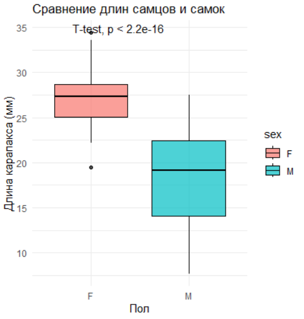
2.8.1.6 Интерпретация результатов
Если p-value < 0.05, различия между группами статистически значимы.
Эффект размера помогает оценить биологическую важность различий. Например, если самки значительно крупнее самцов (d = 1.2), это может указывать на половой диморфизм, связанный с репродуктивной стратегией.
2.8.1.7 Пример полного анализа для веса
# Полный анализ для веса
weight_analysis <- data %>%
group_by(sex) %>%
summarise(
mean_weight = mean(weight),
sd_weight = sd(weight),
n = n()
) %>%
mutate(
t_test = list(t_test(weight ~ sex, data = data)),
cohens_d = list(cohens_d(weight ~ sex, data = data))
)
# Вывод результатов
print(weight_analysis)
# Распределение веса по полу
ggplot(data, aes(x = factor(sex), y = weight, fill = factor(sex))) +
geom_violin(trim = FALSE, alpha = 0.7) +
geom_boxplot(width = 0.2, outlier.shape = NA, fill = "white") +
labs(title = "Распределение веса по полу", x = "Пол", y = "Вес (г)") +
theme_minimal()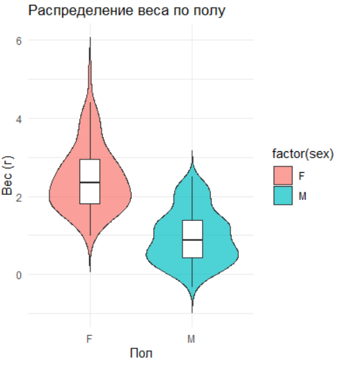
2.8.1.8 Выводы
Используйте t-тест для нормальных данных и U-тест для ненормальных.
Дополните анализ оценкой эффекта размера для биологической интерпретации.
Визуализируйте различия с помощью boxplot или violin plot.
Рекомендации :
Для многомерных данных (например, одновременное сравнение длины, веса и возраста) применяйте MANOVA.
Если группы неоднородны (например, разный возрастной состав), используйте ковариационный анализ (ANCOVA).
2.8.2 Что делать, если тест на нормальность не пройден для одной из групп?
При сравнении количественных характеристик (например, длины карапакса у самцов и самок) важно учитывать, соответствуют ли данные нормальному распределению. Если тест на нормальность (например, Шапиро-Уилка) показывает значимое отклонение от нормальности для одной из групп, это влияет на выбор статистического теста и интерпретацию результатов.
2.8.2.1 Пример из нашего анализа
Мы провели сравнение длины карапакса между самцами и самками:
Для самцов:
shapiro_test(males$length)→ p-value = 0.000574 (нормальность отвергнута).Для самок:
shapiro_test(females$length)→ p-value = 0.891 (нормальность подтверждена).
Несмотря на это, мы применили как t-тест , так и U-тест Манна-Уитни :
t-тест : p-value = 1.46e-40 (значимо).
U-тест : p-value = 1.97e-27 (значимо).
Коэффициент Коэна: d = 2.14 (большой эффект).
2.8.2.2 Почему это работает?
t-тест устойчив к умеренным отклонениям от нормальности :
При больших выборках (n > 30) центральная предельная теорема позволяет использовать t-тест даже при слабо выраженной асимметрии.
В вашем случае выборка самцов (n = 149) достаточно велика, чтобы компенсировать отклонение от нормальности.
U-тест Манна-Уитни — непараметрическая альтернатива :
Этот тест не требует нормальности и сравнивает ранги, а не средние значения.
Он подтверждает значимость различий, что усиливает доверие к выводу.
Эффект размера (коэффициент Кобена) :
- d = 2.14 указывает на большой эффект , что важно для биологической интерпретации, даже если p-values значимы.
2.8.3 Сравнение параметров (линейные модели для оценки межгрупповых различий)
Для сравнения параметров двух линейных моделей (например, скорости роста самцов и самок) используем следующий подход.
# Установка рабочей директории
setwd("C:/TEXTBOOK/")
# Загрузка библиотек
library(tidyverse)
library(ggplot2)
library(broom)
library(knitr)
# Загрузка данных
data <- read_csv("shrimp_catch.csv") %>%
filter(!id %in% c(10, 50)) # Удаление аномальных наблюдений
# Фильтрация данных по полу
data_male <- data %>% filter(sex == "M")
data_female <- data %>% filter(sex == "F")
# Построение моделей
model_male <- lm(length ~ age, data = data_male)
model_female <- lm(length ~ age, data = data_female)
ggplot(data, aes(age, length, color = sex)) +
geom_point(alpha = 0.5) +
geom_smooth(method = "lm", formula = y ~ x) +
scale_color_manual(values = c("#E7B800", "#00AFBB")) +
labs(x = "Возраст", y = "Длина (мм)") +
theme_minimal()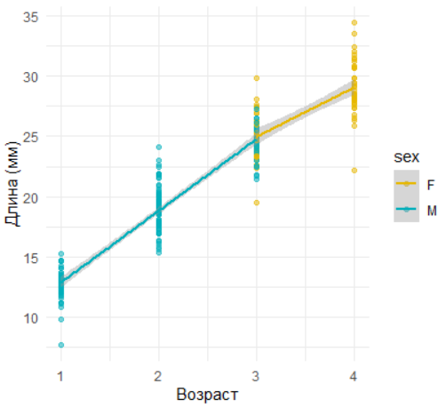
Метод 1: Объединенная модель с взаимодействиями
# Установка рабочей директории
joint_model <- lm(length ~ age * sex, data = data)
summary(joint_model) %>%
broom::tidy() %>%
filter(term == "age:sexM") %>%
kable(caption = "Проверка различия наклонов", digits = 3)Table: Проверка различия наклонов
|term | estimate| std.error| statistic| p.value|
|:--------|--------:|---------:|---------:|-------:|
|age:sexM | 1.86| 0.459| 4.053| 0|
> Интерпретация:
Значимый коэффициент взаимодействия age:sexM (p < 0.05) указывает на статистически значимые различия в скорости роста между полами.
Метод 2: Тест Вальда
library(car)
delta_beta <- coef(model_male)["age"] - coef(model_female)["age"]
se_diff <- sqrt(vcov(model_male)["age","age"] + vcov(model_female)["age","age"])
z_score <- delta_beta / se_diff
p_value <- 2 * pnorm(-abs(z_score))
cat("Разница коэффициентов:", round(delta_beta, 3),
"\nZ-статистика:", round(z_score, 3),
"\np-value:", format.pval(p_value, digits = 2))
comparison_table <- data.frame(
Параметр = c("Скорость роста самцов", "Скорость роста самок", "Разница"),
Значение = c(
round(coef(model_male)["age"], 2),
round(coef(model_female)["age"], 2),
round(delta_beta, 2)
),
`p-value` = c(
format.pval(summary(model_male)$coefficients["age",4], digits = 2),
format.pval(summary(model_female)$coefficients["age",4], digits = 2),
format.pval(p_value, digits = 2)
)
)
kable(comparison_table, caption = "Сравнение коэффициентов роста")Вывод
: Сравнение коэффициентов роста
|Параметр | Значение|p.value |
|:---------------------|--------:|:-------|
|Скорость роста самцов | 5.95|<2e-16 |
|Скорость роста самок | 4.09|5.2e-13 |
|Разница | 1.86|0.00024 |
> Интерпретация:
Значимая разница (p < 0.05) указывает на статистически значимые различия в скорости роста между полами.
2.8.4 Сравнение моделей
Одним из ключевых аспектов анализа биологических данных является определение формы зависимости между переменными. В данном разделе мы рассмотрим основы подбора модели зависимости между длиной и весом креветок. Начиная с простой линейной модели, мы постепенно перейдем к более сложным нелинейным моделям, чтобы продемонстрировать методику выбора наилучшей модели. Cравним три модели — линейную, полиномиальную и степенную — чтобы определить, какая из них наилучшим образом описывает данные. Цель анализа — найти математическую зависимость, которая:
Точно предсказывает вес креветки по её длине.
Имеет биологическую интерпретацию.
Минимизирует ошибку предсказания.
2.8.4.1 Модели и их параметры
- Линейная: \(\text{weight} = \beta_0 + \beta_1\cdot\text{length}\)
- Полиномиальная 3-й степени: \(\text{weight} = \beta_0 + \beta_1\cdot\text{length} + \beta_2\cdot\text{length}^2 + \beta_3\cdot\text{length}^3\)
- Степенная: \(\text{weight} = a\cdot\text{length}^b\)
2.8.4.2 Метрики
- R² - (коэффициент детерминации): чем ближе к 1, тем лучше модель объясняет данные.
- AIC -(информационный критерий Акаике): чем меньше значение, тем лучше модель с учётом её сложности.
2.8.4.3 Результаты
2.8.4.3.1 1. Линейная модель
Coefficients:
Estimate Std. Error t value Pr(>|t|)
(Intercept) -2.115 0.085 -24.86 <2e-16 ***
length 0.1665 0.0038 43.71 <2e-16 ***R² = 0.894
AIC = 148.02
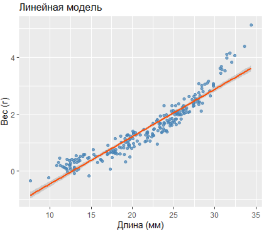
2.8.4.3.2 2. Полиномиальная модель
Coefficients:
Estimate Std. Error t value Pr(>|t|)
poly(length,3)1 14.5038 0.2127 68.18 <2e-16 ***
poly(length,3)2 3.7209 0.2127 17.49 <2e-16 ***
poly(length,3)3 0.9526 0.2127 4.48 1.2e-05 ***R² = 0.957
AIC = -52.80
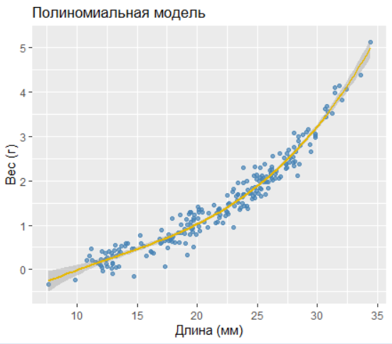
2.8.4.3.3 3. Степенная модель
Parameters:
Estimate Std. Error t value Pr(>|t|)
a 0.000157 0.000028 5.60 6.3e-08 ***
b 2.920160 0.054102 53.98 <2e-16 ***R² = 0.955
AIC = -48.43 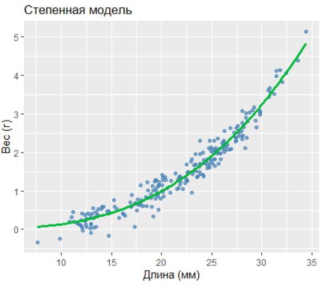
2.8.4.4 3. Сравнение моделей
| Модель | R² | AIC |
|---|---|---|
| Линейная | 0.894 | 148.02 |
| Полиномиальная | 0.957 | -52.80 |
| Степенная | 0.955 | -48.43 |
Выводы:
Полиномиальная модель демонстрирует наилучшие показатели (максимальный R² и минимальный AIC).
Степенная модель близка по качеству, но её параметр b≈2.92 близок к биологически ожидаемому значению 3 (вес пропорционален объёму).
Линейная модель существенно уступает по точности.
2.8.4.5 4. Рекомендации
Для прогнозирования используйте полиномиальную модель, так как она минимизирует ошибку.
Для биологической интерпретации предпочтительна степенная модель: weight∝length2.92.
Избегайте переобучения: Полиномиальные модели высокой степени могут терять интерпретируемость.
2.8.4.6 5. Визуализация остатков
Остатки степенной модели распределены равномерно, что подтверждает её адекватность: 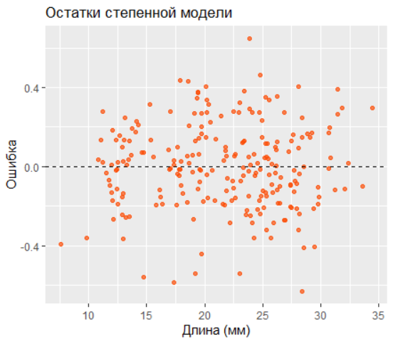
2.8.4.7 Заключение
Для анализа зависимости веса от длины северной креветки рекомендуется:
Полиномиальная модель — для задач, требующих максимальной точности.
Степенная модель — для интерпретации биологических закономерностей.
Скрипт вышеописанных событий:
# Установка рабочей директории
setwd("C:/TEXTBOOK/")
# Загрузка библиотек
library(tidyverse)
library(ggplot2)
# Загрузка данных
data <- read_csv("shrimp_catch.csv") %>%
filter(!id %in% c(10, 50)) # Удаление аномальных наблюдений
# Проверка структуры
glimpse(data)
# Линейная модель: вес ~ длина
model_linear <- lm(weight ~ length, data = data)
summary(model_linear)
# Визуализация
ggplot(data, aes(x = length, y = weight)) +
geom_point(color = "steelblue", alpha = 0.7) +
geom_smooth(method = "lm", color = "#FC4E07") +
labs(title = "Линейная модель", x = "Длина (мм)", y = "Вес (г)")
# Полиномиальная модель: вес ~ длина + длина? + длина?
model_poly <- lm(weight ~ poly(length, 3), data = data)
summary(model_poly)
# Визуализация
ggplot(data, aes(x = length, y = weight)) +
geom_point(color = "steelblue", alpha = 0.7) +
geom_smooth(method = "lm", formula = y ~ poly(x, 3), color = "#E7B800") +
labs(title = "Полиномиальная модель", x = "Длина (мм)", y = "Вес (г)")
# Степенная модель: вес ~ длина^k (k подбирается)
model_power <- nls(weight ~ a * length^b,
data = data,
start = list(a = 0.001, b = 3)) # Начальные значения
summary(model_power)
# Визуализация
data$pred_power <- predict(model_power)
ggplot(data, aes(x = length, y = weight)) +
geom_point(color = "steelblue", alpha = 0.7) +
geom_line(aes(y = pred_power), color = "#00BA38", linewidth = 1.2) +
labs(title = "Степенная модель", x = "Длина (мм)", y = "Вес (г)")
# Расчет AIC
AIC(model_linear, model_poly, model_power)
# Расчет R?
r2_linear <- summary(model_linear)$r.squared
r2_poly <- summary(model_poly)$r.squared
r2_power <- 1 - sum(residuals(model_power)^2) / sum((data$weight - mean(data$weight))^2)
# Создание таблицы сравнения моделей
comparison_table <- data.frame(
Модель = c("Линейная", "Полиномиальная", "Степенная"),
R_square = c(r2_linear, r2_poly, r2_power),
AIC = c(AIC(model_linear), AIC(model_poly), AIC(model_power))
)
# Вывод таблицы
print(comparison_table)
# Остатки для степенной модели
data$residuals <- residuals(model_power)
ggplot(data, aes(x = length, y = residuals)) +
geom_point(color = "#FC4E07", alpha = 0.7) +
geom_hline(yintercept = 0, linetype = "dashed") +
labs(title = "Остатки степенной модели", x = "Длина (мм)", y = "Ошибка")